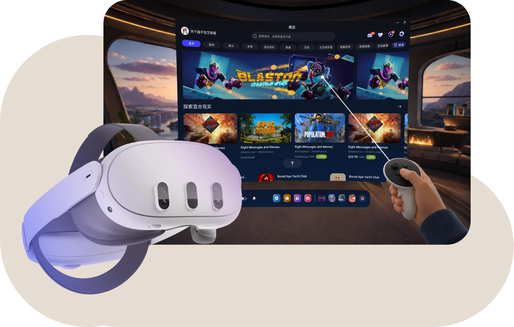

轻游梦工坊
官网网站·小程序·开发者平台
一款轻游戏编辑器的官方网站，游戏开发者进行学习、交流与制作的平台
查看轻游梦工坊项目详情正在进入Shinny的作品集


官网网站·小程序·开发者平台
一款轻游戏编辑器的官方网站，游戏开发者进行学习、交流与制作的平台
查看轻游梦工坊项目详情情绪疗愈·情感陪伴·生活记录
像养花一样照料自己的情绪，以情绪为主导的模拟经营小游戏
查看情绪花园项目详情

头显端·官网·开发者平台
XR 原生生态体验设计，从头显端到官网与开发者平台的全链路建设。
查看Tencent XR项目详情会员·活动中心·宣发
包括腾讯先锋/云游戏会员、舞力全开活动中心、轻游梦工坊宣发物料。
查看运营设计项目详情
我的一平米厨房，做饭只放油和生抽。简单的材料、固定的流程，也能过得很有秩序。


用 Apple 原生 APP 的日历、账单、周复盘和日记，打造程序化又温柔的日常系统。


感谢 codex 支持我编写个人网站
感谢 Figma 永恒的陪伴
感谢 GPT 作为我设计上的朋友
感谢 Zhixuan 的设计指导
感谢 Joy 的精神支持
感谢看到这里的你